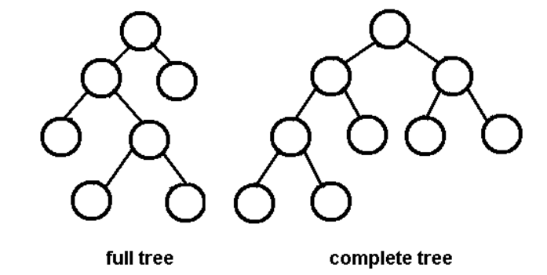
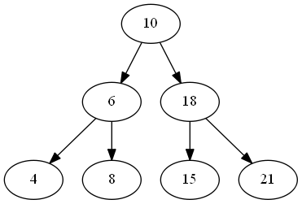

Binary Tree & Binary Search Tree
This is the summary of binary tree and binary search tree part in MAW Chapter 4.
Concept
- A binary tree is a tree in which no node can have more than two children.
- An important application of binary trees is binary search tree: for every node, \(X\), in the tree, the values of all the keys in its left subtree are smaller than the key value in \(X\), and the values of all the keys in its right subtree are larger than the key value in \(X\) (BST-property).
Classification of binary trees
- A full binary tree (proper binary tree or 2-tree) is a binary tree in which each node has exactly zero or two children.
Note
A full node in a binary tree is a node that has exactly two non-null children.
- A complete binary tree is a binary tree, which is completely filled, with the possible exception of the bottom level, which is filled from left to right.

- A perfect binary tree: A binary tree in which all internal nodes have exactly two children and all leaves are at the same level. It has property: each level has exactly twice as many nodes as the previous level (since each internal node has exactly two children).

- A balance binary tree: a binary tree structure in which the left and right subtrees of every node differ in height by no more than 1. Yes, AVL tree definition.
Properties
- The average depth of binary tree is \(O(\sqrt{n})\)
- The height of balance binary tree is \(O(\log n)\)
- A complete binary tree on \(n\) nodes has height \(\lfloor \log n \rfloor\)
- A binary tree of \(N\) nodes, there are \(N+1\)
NULLpointers representing children (MAW 4.4) - The maximum number of nodes in a binary tree of height \(H\) is \(2^{H+1}-1\) (MAW 4.5)
- A perfect binary tree of height \(H\) contains exactly \(2^{H+1}-1\) nodes, of which \(2^H\) are leaves.
- The number of full nodes plus one is equal to the number of leaves in a nonempty binary tree
- The average depth of a node in a binary search tree constructed from random data is \(O(\log n)\)
- The average of height of a random binary search tree is \(O(\log n)\) (i.e., \(E[h] = O(\log n)\)) (MAW 4.14)
- All the basic operations
find,findMin,findMax,insert, anddelete\(O(H)\) time, where \(H\) is the height of the tree.- worst case: height \(H = n - 1\)
- base case: height \(H = \log N\), where the tree is a complete binary tree.
- Randomly built binary search trees:
- The average height is much closer to the best case.
- Little is known about the average height when both insertion and deletion are used.
- characteristics
- Keys inserting in random order into an initially empty tree.
- Each of the \(n!\) permutations of the input keys is equally likely.
Selected Proofs
Let's prove "The number of full nodes plus one is equal to the number of leaves in a nonempty binary tree" using induction:
-
Let \(n\) be the number of full nodes and \(m\) be the number of leaves in a nonempty binary tree. Then, we have \(n + 1 = m\).
- Base case: \(n = 0\), since the binary tree is nonempty, we have the degenerated binary tree with \(m = 1\).
- Recursion: Suppose the claim holds for \(n\) (i.e., \(n + 1 = m\). We want to show that the claim also holds for \(n+1\). There are two cases we need to consider:
- We add two leaves to form one extra full node. In this case, we have \(m - 1 + 2 = m+1\) leaves. Thus, we have \(m+1 - (n+1) = n+1+1 - (n+1) = 1\). The claim holds.
- We add one leaf to form one extra full node. In this case, we have \(m + 1\) leaves. Thus, we have \(m+1 - (n+1) = 1\). The claim holds.
Reference
- MAW Chapter 4
- Binary Tree Wikipedia
- Binary Tree CMU page
comments powered by Disqus